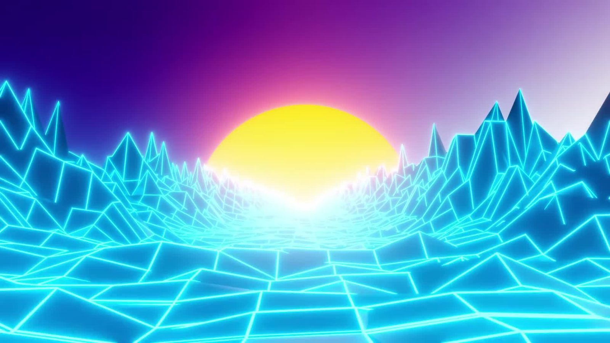

References / Illustration / 411
Chase The Sun (G. Casqueiro)
A frame from a short Blender animation: a cyan neon wireframe valley runs toward a glowing yellow sun under a violet-to-magenta sky.
- Source
- Wikimedia Commons: Chase The Sun.webm
- Creator
- G. Casqueiro
- Made
- 2019-02-07 (date given on Commons)
- Style
- Synthwave (agent-proposed, not yet reviewed by a person)
- Moods
- Energetic, nocturnal, retrofuturist
- Evidence
- Inspected the 1920 × 1080 still Synthwave cyberspace sunset (low res).jpg.jpg), a frame of the video, and stored a reduced copy. The video itself was not played.
- Reviewed
- Rights
- Open license, stored. License: CC-BY-SA-3.0. Rights policy
Context
The author describes it as a “First animation test with Blender 2.8 Beta and Eevee”, made by following a Ducky 3D tutorial, with the music “Mt Fuji” by Timecrawler 82 (CC BY 3.0). Wikimedia Commons.
The video comes from Vimeo 315911655. A Commons reviewer confirmed the CC BY-SA 3.0 license on Vimeo on 10 December 2019. Commons files both the video and the still under Category:Synthwave.
Observed
- The sky shades from deep indigo at the upper left through magenta to a pale lilac at the upper right.
- A large yellow sun, half hidden, sits at the centre of the horizon with a pink halo.
- A cyan wireframe of low-polygon facets fills the lower two thirds: a flat valley floor in the centre and sharp peaks on both sides. Every edge glows.
- The valley converges on the sun, and the glow turns almost white near the horizon. There is no text, car, or palm tree.
Why it belongs
It shows the symmetrical horizon composition and the glow surface of the style with nothing else. Cyan, not magenta, carries the grid here, so it is a useful counterpart to the magenta grids of the j4p4n banner.
Borrow
Center the vanishing point on the sun and let the grid glow brighten toward the horizon.
Frame a central path with jagged wireframe peaks on both sides to make a symmetrical hero.
Measured
Machine-extracted by tools/image-traits.py on . Full measurement.
- Mean chroma
- 0.55
- Palette
- #0fb4e3 6%
- #0ea3d9 6%
- #23006e 5%
- #11c6ed 5%
- #0c8fcb 5%
- #33e9f3 4%
- #4ff2f6 4%
- #71f6f9 4%

